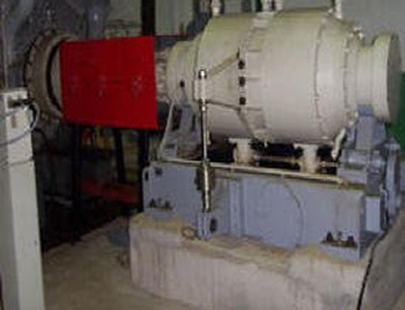
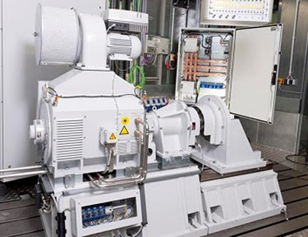
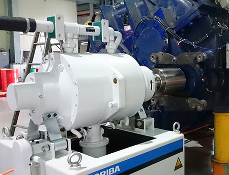
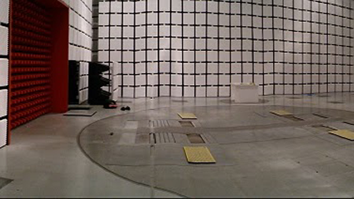
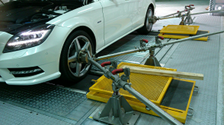

向邦實業股份有限公司
HORIBA_電動車/馬達/引擎/底盤動力計_DYNO
TURN LUCKILY CO., LTD.





營 業 產 品
---車輛工業測試技術及儀器設備---
---車輛工程之技術轉移、研究發展、生產品管檢驗及翻修再生相關測試設備
---車輛設計、工程技術轉移及顧問---
英國Ricardo
- 車輛動力相關零組件研發、設計、製造及技術轉移等
- 內燃機引擎、引擎零件、變速箱機構、汽車造型等
- 動力測試設備及性能檢驗分析儀
德國 Horiba ( Schenck )
- 車輛動力系統性能測試設備
- 電動車馬達 / 引擎 動力計 dynamometer /dyno
- 整車動力性能試驗設備
- R&D底盤動力計
- 性能測試
- 廢氣排氣法規測試
- 整車或引擎噪音測試
- 耐久測試
- 油耗污染測試
- 電磁波干擾測試
- 環境模擬試驗
德國Dürr
- Production Line車輛產檢線用設備
- 生產線成車最終產品檢驗線測試設備
- 車輛生產、組裝、設計及規劃
- 煞車油、水箱水、離合器、雨刷水、冷媒、機油、燃油、轉向液壓油等充填設備
美國Power Test ( SuperFlow )
- 變速機構及煞車零組件測試
- 變速箱測試台
- 空氣流量測試台
--其它工業用儀器設備與電子量測控制元件--
美國Max Machinery
- Piston Flow Meter
- Gear Flow meter
- Helical Flow meter
德國Delphin